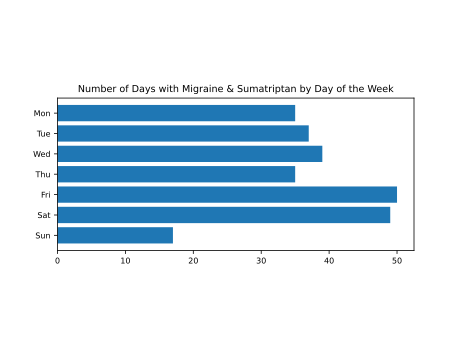

* est. underreported by 20% from 2022 on, and 40% prior to 2022.

| date | comment |
|---|---|
| 2024-02-21 | Migraine came on in the evening, perhaps as a consequence of concentrating somewhat harder than usual at work. perhaps in part a return of previous days. |
| 2024-02-20 | |
| 2024-02-19 | migraine came on gradually during the morning. Perhaps a consequence of having richer food (more red meat) than usual last night. Took ST at 12:30 after finding a red bull and some paracetamol didn’t help much. |
| 2024-02-14 | Migraine started coming back shortly after I got up. Took ST at 7am. |
| 2024-02-13 | Awoke with sharp headache and took ST at 5am. probably triggered by running the day before. Muscle soreness noted. |
| 2024-02-08 | |
| 2024-02-02 | Bad migraine in early morning, perhaps related the stopping propranolol a few days earlier (resuming topiramate). Took ST at 6am then again at 9am. |
| 2024-01-23 | mid morning headache - might have passed with paracetamol but took ST as difficult day ahead, headache came back in evening. recent headaches are likely related to my increase in running since last week. |
| 2024-01-19 | sharp headache towards evening due to focusing hard and perhaps drinking too much tea. took st twice. |
| 2024-01-18 | |
| 2024-01-13 | |
| 2024-01-04 | |
| 2024-01-03 | |
| 2023-12-20 | headachee in evening after running for first time since being sick last week, ie about 14 days. took ST at 5pm. |
| 2023-12-19 | awoke 5am with headache for no particular reason except some weird dreams, one about eating salty French fries. felt hint of headache before going to bed. took st at 5am. |
| 2023-12-16 | headache mid-morning for no particular reason, took st around 8am |
| 2023-12-12 | stomach bug and unable to eat for two days - as usual comes with bad headache for which ST is less effective than usual |
| 2023-11-21 | woke up with migraine. had weird dreams of trying to make up a story. took ST at 6am or so. |
| 2023-11-10 | awoke with headache and took ST at 5:30 am - perhaps eating too much in the evening and perhaps getting a cold |
| 2023-11-03 | woke up with mild headache after sleeping poorly in the morning - took st at 8:30am |
| 2023-10-20 | headache began towards evening, took st at 8pm. have a cold and feel slightly bloated for dos me reason. |
| 2023-10-18 | headache began towards evening for no apparent reason. took ST at 6pm. |
| 2023-10-16 | awoke with headache and took ST at 6am - probably due to a cold |
| 2023-10-02 | |
| 2023-09-27 | migraine returned in the evening, took st at 7pm |
| 2023-09-26 | |
| 2023-09-25 | Awoke in the middle of the night with clear feeling a migraine was coming so took ST and went back to sleep. Recovering from a cold. |
| 2023-09-07 | heatwave and lots to do, took ST in early afternoon |
| 2023-08-30 | woke up with beginning headache and took ST at 6am. Attributing it to mild muscle ache from running two days in a row. |
| 2023-08-21 | headache started in the evening after running for the first time in a while due to a cold. took ST before bed at 9:30pm. |
| 2023-08-11 | beginning headache in the late afternoon, probably due to heat and exercise. took ST at 6pm. |
| 2023-08-03 | woke up with mild headache and took st at 5am - probably due to hard Thai massage yesterday |
| 2023-07-28 | woke up early and felt indication of headache for no particular reason. took ST at 6am. update: noticed muscle ache from running two days earlier |
| 2023-07-11 | woke up at 2am with mild but persistent headache and took ST. associated with muscle tiredness from walking a lot. too much caffeine the day before may also be related. |
| 2023-07-05 | headache came back in the evening. unsure why but accompanied by muscle ache for no apparent reason. perhaps becoming sick. took ST at 9pm. update: I clearly have an infection, probably cold/flu - right ear feels weird too.Lingering headache in the previous evening likely due to stressful day and poor eating. woke up at 2am and took ST. |
| 2023-06-27 | |
| 2023-06-22 | Stomach bug lead to bad migraine yesterday evening and over night. Took ST several times. |
| 2023-06-21 | |
| 2023-06-12 | |
| 2023-06-10 | Woke up an hour after going to bed, with a bad, rather sudden migraine. This was the first really hot day, 26 degrees in the bedroom, of the summer. Starting a new job, mild muscle ache, and dietary triggers might have played a part. |
| 2023-06-09 | |
| 2023-05-24 | |
| 2023-05-12 | felt hyper since noon, took ST preemptively at 7pm |
| 2023-05-04 | |
| 2023-04-18 | headache started towards evening after two days in row of exercise resumed after long hiatus. took st around 9pm. |
| 2023-03-30 | mild headache towards evening - took ST at 8pm rather than risk bad night |
| 2023-03-09 | |
| 2023-03-08 | gastroenteritis on Tuesday to Wednesday caused bad migraine. took ST in evening, morning and again in evening wed but not very effective. |
| 2023-03-07 | |
| 2023-02-18 | awoke with starting migraine and took st at 6am. stopping topiramate obviously made the brain more active and I’m back to having more racing but mostly nonsensical thoughts or dreams in bed, like bits of songs or poems on repeat. |
| 2023-02-04 | headache starting around noon because rie is handling Akiko’s sleep wrong. |
| 2023-01-30 | awoke with oncoming migraine and took ST around 7am. clearly associated with exercise ad dome from gym session two days ago. |
| 2023-01-25 | beginning migraine after lunch, took ST at 2pm. Slight stress and a late heavy lunch didn’t help. |
| 2023-01-09 | signs of migraine around 8am - tried a redbull but ended up taking st at 10am. No particular reason except that it’s Monday. |
| 2023-01-04 | Gradually developed headache from early in the morning and took ST around 10am. Probably due to bad feeling about returning to the office for first time in the new year. |
| 2022-12-22 | |
| 2022-12-21 | |
| 2022-12-20 | |
| 2022-12-12 | headache in the morning. perhaps related to stuffy nose and generally not feeling great. |
| 2022-12-01 | headache indication started day before gradually from around noon for no particular reason except perhaps that I started coughing up a lot of thick mucus - unclear if it is clearing up aftermath of previous cold or beginning of a new problem. headache remained in the morning so took ST around 6am. Low level headache remaining in the evening so taking ST again at 5pm. |
| 2022-11-24 | Got headache in the evening and took ST around 9pm. Probably triggered by exercising for the first time after a moderate hiatus due to sickness. |
| 2022-11-13 | started getting headache in afternoon after some beer with friends. Took ST on getting home at 6:30pm. |
| 2022-11-07 | Woke up with emerging migraine and took ST aroun 7am. Seems triggered by 5km run yesterday, which is a step up after long paternity hiatus. |
| 2022-10-27 | creeping headache in evening, took st at 10pm. ran 5k for first time in a long time today and feel slightly hot in feverish sense. |
| 2022-10-17 | woke up with headache at 3am for no apparent reason. Took st at 6am. |
| 2022-10-07 | migraine signs started at 5pm took ST at 7pm. probably due to having steak earlier though recovering after stomach ailment. but thinking topiramate is not very effective. |
| 2022-09-27 | woke up with headache at 9am for no particular reason, took normal topiramate immidiately but seems not to help. took st at 10:30 but seems slow to help. |
| 2022-09-22 | woke up with headache no sound related to muscle soreness after exercise yesterday. |
| 2022-09-19 | woke up with mild but persistent headache undoubtedly due to exercise. took st in the morning. |
| 2022-09-15 | woke up with headache at 6am and took st. muscle ache from exercising with weights for first time in years. |
| 2022-09-09 | carried the baby around a lot (walking 10kg with carrier) including tube rides. felt headache starting around 5pm, tried red bul and paracetamol with short nap but then took st at 7pm regardless. |
| 2022-08-26 | Started getting a headache in the afternoon for no particular reason. Took ST around 4pm. |
| 2022-08-22 | woke up with headache and took ST at 8am. stomach bug and hardly able to eat probably a factor. |
| 2022-08-13 | Awoke with headache for no discernible reason. Took ST at 8am. |
| 2022-08-10 | spent three hours in gazing sun at the shooting range |
| 2022-08-07 | |
| 2022-07-30 | Migraine began after dinner around 7pm. Had felt lethargic all day as if too much physical activity, but haven’t really done that much. preceding nights sleep had been so-so but not awful. |
| 2022-07-24 | Woke up with clear early feeling of stinging migraine, took ST at 4am and went back to sleep. starting to get muscle ache from building work done the day before. |
| 2022-07-12 | very hot, started getting a headache around 9 and took ST at 10:40. |
| 2022-07-03 | woke up with beginning headache. took ST at 9:30am. muscle ache from walking, and forgot to take propranolol the day before. |
| 2022-06-20 | awoke with mild but persistent headache that i felt hints of before going to bed. Not sure why as weather got less hot for a spell. Took ST around 7am. |
| 2022-06-17 | woke up with budding migraine probably due to heat. took st around 11am. |
| 2022-06-06 | |
| 2022-05-20 | Despite sleeping as usual felt rather tired an Thursday to Friday, and had to take ST for emerging migraine on Fri evening. perhaps began by a long walk in the sun on Thursday. |
| 2022-05-06 | returned from Japan, problems with neighbour building works, baby care |
| 2022-04-20 | |
| 2022-04-16 | |
| 2022-04-15 | |
| 2022-04-14 | |
| 2022-04-08 | Woke up with headache 4am, took St at 8am. Had muscle ache from running and walking 16km day before. |
| 2022-03-12 | Fairly sudden and unexpected migraine in the morning. ST at 10am seems not very effective. May be because of digestive troubles after stomach sickness last week. |
| 2022-02-23 | Felt suggestion of headache towards evening and decided to take ST at 5pm as better early than late. |
| 2022-02-18 | Woke up at 4:30am with bad migraine. In addition gel somewhat feverish and queasy. No idea why, but gel sluggish with trouble focusing all afternoon. In the evening felt somehow on edge and surprise pain didn’t start while awake. |
| 2022-02-09 | Pressure from cold/flu, and stress from going to embassy with baby. Took ST around 3pm. |
| 2022-02-05 | Migraine came back in night due to long work day and sitting up with fussy baby. Took ST at 5:30am. |
| 2022-02-04 | Woke up at 3am and took ST. Have a cold, Sat up with baby, some muscle ache and perhaps too big a dinner might all have contributed. Felt indication of migraine at 9pm. |
| 2022-01-29 | Ate too much and had a drink. Hints of migraine around midnight so took paracetamol and ibuprofen - woke up and took ST at 4am. |
| 2022-01-27 | Suddenly felt queasy and drowsy in the late afternoon for no obvious reason, and after dinner it was clear a migraine was imminent so took ST. |
| 2022-01-23 | Despite preemptively taking a second dose of ST in the morning, migraine returned in the night and I took ST to sleep. |
| 2022-01-22 | Migraine began midday for no apparent reason. |
| 2022-01-18 | Woke up with migraine. Took ST at 6am and went back to bed for a bit. Had steak and ice cream the night before, slight muscle ache from running. |
| 2022-01-15 | |
| 2022-01-14 | |
| 2022-01-09 | Took ST mid-day as headache showed signs of returning, and in evening as it was coming back anyway. |
| 2022-01-08 | Long day driving and clay shooting. Headache started in evening so took ST to baby sit. |
| 2021-12-31 | Felt ok in the morning, went running around noon. Then poor appetite, somewhat bloated, and sleepy. Muscle ache increased - should not have gone running. Took naproxen and paracetamol at 8pm. No avail. Took ST around 10pm as need to sit up with baby. |
| 2021-12-30 | Woke up with headache and took ST around 6am. Combination of factors including muscle ache (shooting and running), babysitting, and most of all feeling bloated from dinner (though it wasn’t excessive). |
| 2021-12-21 | Headache came back in the morning so too 100mg ST and NF. |
| 2021-12-20 | After visiting neurologist walked a lot and got booster jab. Took ST in early evening. |
| 2021-12-04 | Woke up early and couldn’t sleep. Mind active with random stuff but otherwise not tense. Eventually dozed off, and woke up with headache around 8. Took ST. Had 350g steak night before. |
| 2021-11-30 | Woke up with headache and took ST in morning. |
| 2021-11-23 | |
| 2021-11-18 | Woke up with headache, took ST at 6 or so and slept a bit longer. Headache came back in afternoon so took ST around 3pm. It didn’t help entirely, and started getting really bad near bedtime so took 100mg dose around 11pm. Woke up fine next day, touch wood. |
| 2021-11-13 | |
| 2021-11-10 | |
| 2021-11-09 | |
| 2021-11-08 | |
| 2021-11-07 | |
| 2021-11-06 | |
| 2021-10-30 | Awoke with signs of beginning migraine. Took ST around 8am. |
| 2021-10-25 | Woke up with hint of migraine. Tried paracetamol but took ST around 11am. |
| 2021-10-18 | Ate too much meat yesterday. Woke up with mild but persistent headache. Took ST at 9am. |
| 2021-10-12 | Woke up with headache around 4am. Took ST at about 7:30. |
| 2021-10-07 | Woke up with headache. Took ST at 6:30am. Had gone to bed early day before. |
| 2021-10-02 | Awoke at 2am and 4am to use the bathroom and noticed signs of migraine. Took ST at 7am. |
| 2021-09-27 | Awoke with headache and took ST at 7 am. Several factors: are too much meat and garlic butter, muscle ache from running, and triggered by late night photo editing of interesting spider. |
| 2021-09-25 | Awoke with beginning headache. Felt hints of it the night before for no discernible reason. Have been remarkably sleepy recently and also sleep more than usual. Took ST at 8am. |
| 2021-09-21 | Woke up with signs of migraine starting and took ST around 8am. Two days off to work on the house, after returning from Paris on Sunday. |
| 2021-09-17 | Went to Paris and a bit stressful because of covid travel checks. Took ST around 10am at station after passing all checks. |
| 2021-09-13 | Woke up with budding migraine. Took ST at 8am. Maybe connected with heavy dinner (cream sauce, pasta, pork) the night before. |
| 2021-09-06 | Awoke with headache. Felt it beginning yesterday evening. Muscle ache, too big dinner, and computer game contributed. Took ST at 8am. |
| 2021-08-24 | Still bad muscle ache. Migraine came back in the morning. Took ST around 9. |
| 2021-08-23 | Exerted myself over the weekend and awoke to bad muscle ache all over. Migraine started mid morning so took ST. Didn’t quite pass so took ST again mid afternoon. |
| 2021-08-10 | Headache came back in the evening after returning home from boating. Took ST around 4pm. Noticed muscle ache in arms from pulling on ropes. |
| 2021-08-09 | Boating trip. Awoke with headache and took ST at 7:30am. Had slept quite long but had to get up to urinate three times for some reason. One beer the night before. |
| 2021-07-31 | Woke up with headache. Felt hint of it night before. Took ST around 7am. Slight muscle ache and some stress from work. |
| 2021-07-26 | Got migraine in the evening after health check with physio. Took ST around 6pm. |
| 2021-07-17 | Sunny day, went to a castle. Around 1pm suddenly started feeling a migraine build-up and took ST. It still got really bad for 3-4h before beginning to improve. Most likely due to a lot of sun for the first time in the year. Could have drunk more water. |
| 2021-07-09 | Woke up with mild headache. Took ST at 8am. Probably due to slight muscle ache from a short run yesterday after not running for a month. |
| 2021-06-29 | Awoke with headache for no particular reason. Perhaps the rainy weather and some muscle ache from garden work. Took paracetamol at 6am, went back to bed, took ST at 8am. |
| 2021-06-24 | Woke up tense with a mild headache after staying up too late to finish a shelf building project. Tried to take a nap at 1pm but couldn’t sleep much. Took ST at 2pm. |
| 2021-06-13 | Headache began in the morning. Seems due to the weather suddenly becoming hot, coupled with a bit of sunburn and muscle ache. |
| 2021-06-02 | Trip to Wales. Much walking and sunlight caused migraine to start in late afternoon. Took ST around 4pm. |
| 2021-06-01 | Went to the bank in the morning. Lots of sun and heat, first such day of h the season. Got migraine and took ST around noon. Followed GPS advice and took one more a few hours later, though perhaps not strictly needed. |
| 2021-05-29 | Took ibuprofen before going to bed but woke up with indication of migraine beginning. Likely due to muscle ache as started running again last two days after long hiatus. Took ST at 10am. |
| 2021-05-15 | Woke up with headache again. Took ST at 8am. Headache resumed yesterday when I did a math/programming challenge online. |
| 2021-05-14 | Awoke with headache, took ST at 6am |
| 2021-05-13 | Slept too long in the morning and felt stressed during the day. Took ST towards late afternoon as migraine was beginning. |
| 2021-05-08 | Slept very well but started getting a mild headache mid-morning for no discernible reason. Took ST before noon as would have turned into migraine and I find it better to stop them early in the day. |
| 2021-05-03 | Mild but increasing headache - took ST around noon as pretty sure would have gotten bad. |
| 2021-03-20 | Woke up with headache for no particular reason. Took ST early. |
| 2021-03-15 | Started to get a headache in the afternoon for no apparent reason. At 11:30 brisk walk and legs felt tired, at 14:00 took ST. |
| 2021-03-13 | Moved house, bad muscle ache from lifting. Woke at 5am with worst migraine since 2014. Took ST and laid down. At 8am took ST again. Felt sick all the time but managed to not throw up. Started to feel better around 11am. |
| 2021-03-10 | |
| 2021-03-04 | |
| 2021-02-27 | |
| 2021-01-29 | Awoke with mild headache for no particular reason. Had good sleep this night, albeit not the one before it. Tried paracetamol to no avail. Took ST around 10am. |
| 2021-01-23 | Awoke with mild but increasing headache - tried paracetamol and sleep more but finally took ST at 11am. |
| 2021-01-18 | Awoke at 4am with headache after slightly disturbing dream. Had sleepy porky the preceding night, and perhaps eaten too red meat on Saturday. |
| 2021-01-13 | Awoke with mild but increasing headache. Inexplicable. Rainy weather perhaps. Paracetamol and coffee didn’t help. Took ST at 10am. |
| 2021-01-05 | Awoke at 1:30am with a blinding headache and took ST to be able to sleep. Started to exercise earlier today after a holiday-hiatus. |
| 2020-12-30 | Started feeling heavy in the late morning and got starting migraine in afternoon. Took ST around 2pm. Concentrated quite hard on some interesting writing in the morning, but otherwise no good reason for headache. Suspect diet change over holidays. |
| 2020-12-27 | Intermittent stinging headache all day - mostly relaxed, watched Shakespeare and had a jog. 4pm became persistent and obvious it would turn into migraine so took ST. |
| 2020-12-26 | Felt heavy all afternoon and had party in the evening. Clear signs of headache coming so took ST around 6pm. |
| 2020-12-25 | Woke up still sleepy despite having slept well, snoozed for a couple of hours in the sofa. Still felt heavy and noticed signs of likely migraine. Took ST around 12 as earlier in the day is usually better. |
| 2020-12-09 | Woke at 2am with pretty bad headache and took ST to be able to sleep - felt the beginning of it when I went to bed but paracetamol didn’t help this time. |
| 2020-12-03 | Woke up with headache for no particular reason. Took ST around 8am. |
| 2020-11-20 | Woke with headache again. Took ST at 8am. |
| 2020-11-19 | Woke up with headache, took ST at 6:20am and managed an hour more sleep. |
| 2020-11-11 | Awoke with headache. Took ST at 7am. |
| 2020-11-06 | Woke up with mild but persistent headache. Paracetamol didn’t help. Took ST at 9:30. Stressful work yesterday. |
| 2020-11-01 | Headache all night but could sleep. Took ST in the morning. Day after returning from Cornwall. |
| 2020-10-30 | Headache in the evening, took ST maybe 10pm. Combination of muscle ache from walking in Cornwall and eating too much. Had a glass of Sherry in the afternoon on arriving at hotel too. |
| 2020-10-25 | Woke up with headache, took ST at 9am. Tried SF yesterday. |
| 2020-10-21 | Unexpectedly got bad headache in the evening. Took ST at 6pm. |
| 2020-10-15 | Woke with beginning headache and took ST at 4am. WFH is stressful and not sleeping well. |
| 2020-10-07 | Stubborn headache from morning refused to go away despite a nap. Took ST around 2pm. |
| 2020-10-06 | Woke with slight headache around 4am, no idea why. Took ST and slept until 8am. |
| 2020-09-10 | Evening headache for no reason - took ST around 9pm |
| 2020-09-05 | We to play poker at a party, had only one beer but started to get a headache and took ST. |
| 2020-08-26 | Headache started again in evening - took STWoke up with budding headache, took ST around 8. Slept poorly two nights ago, had minor headache yesterday but used otc painkiller and it went away before bed. Still came back over night, despite good sleep. |
| 2020-08-21 | Woke with budding headache around 5am, took ST and went back to sleep for a few hours. Have been unusually sleepy despite sleeping well. |
| 2020-07-31 | Stressed about support at work. |
| 2020-07-21 | Mild headache started during return flight from Spain so took ST early. |
| 2020-07-17 | Flying to Girona via Orkney |
| 2020-07-16 | Probably due to eating too rich food |
| 2020-07-08 | Came back in the morning. |
| 2020-07-07 | Evening, got bad despite recognising early and trying exercise+food+nap. Felt sleepy in afternoon for no reason. |
| 2020-04-10 | Woke up with migraine. Felt bloated after eating spaghetti carbonara last night. Took ST at 7am. |
| 2020-03-28 | |
| 2020-03-07 | Creeping headache from mid-morning. Setting up new flat. Took ST at 13:00. |
| 2020-02-26 | woke up with headache. probably attributable to anticipation about cover support for the first time. bad commute didn’t help. took ST around 10am. |
| 2020-02-03 | Felt really tired in the afternoon. Probably due to aftermath of cold. Developed headache and took ST around 17:00 before heading to a friends party. |
| 2020-02-02 | Cold caused blocked sinuses - woke up with budding headache. Took ST around 10am. |
| 2020-01-29 | Got flu, woke with increasing headache. Took ST around 9am. |
| 2020-01-24 | Flight to Sweden. Headache increased after landing on the way to rental car. Took ST around 15:00. |
| 2020-01-07 | Developed headache in morning for no apparent reason. Took ST around 10am. |
| 2020-01-03 | Woke up with bad headache. Attributable to car from airport previous night. Took ST at 6:30am. |
| 2019-12-31 | Long day looking at pyramids. Sauna in evening. Got headache. Want to go to new year dinner. Took ST around 9pm. |
| 2019-12-28 | Seemingly for no good reason at all, woke up with headache. Perhaps because boat started moving at 4am and strange dreams. Took ST at 7:20. |
| 2019-12-24 | Migraine recurred later in the day after first excursion in Luxor. Took ST in afternoon/evening. |
| 2019-12-23 | Rough taxi ride to airport. started getting severe headache. Took ST around 1pm. |
| 2019-12-21 | Started getting headache in morning. First day of Christmas vacation. Took ST around 1pm. |
| 2019-12-16 | Headache in evening. Took ST at 6:30. |
| 2019-12-11 | Headache came back towards evening. Took ST at 9pm. |
| 2019-12-10 | Headache in evening and team dinner with new team at new job. Took ST at 8pm. |
| 2019-12-04 | Very mild headache since late morning. Late lunch. Might have passed but rather not take chances. 2nd day at new job. Took ST at 2pm, as better early than late. |
| 2019-11-30 | Woke up with headache. Took ST at 9am. Related to 2.5h run yesterday and subsequent knee pain. |
| 2019-11-27 | Woke up with increasing headache, took ST around 10am. Had one glass of white wine evening before. |
| 2019-11-21 | Headache since late morning for no apparent reason. Had excellent sleep. Took ST at 5pm. |
| 2019-11-20 | Skipped breakfast, spent morning in front of pc, got headache around noon. Took ST at 4pm. |
| 2019-11-15 | Awoke with headache. Frustrating dreams. Monomaniacal thoughts. Tunes popping into mind. Perhaps because of playing frustrating game. Took ST at 8am. |
| 2019-11-12 | |
| 2019-11-06 | Budding headache developed around noon for no apparent reason save that I had stayed home and in front of the computer. Took ST around 2pm. |
| 2019-11-01 | Woke up with headache, took ST around 8am. Started yesterday after shooting for no particular reason I can tell. |
| 2019-10-26 | Woke up with headache, took ST at 10am. Ran 15k yesterday, had two drinks and watched film. |
| 2019-10-04 | Migraine from yesterday remained through the night. Took ST at 8am. |
| 2019-10-03 | Headache back at noon, if a bit milder. Took second ST at 12:45.Nervous about resigning from job. Woke up with sharp pain in center of the head. Took ST at 8am. Pain lessened but remained around noon. |
| 2019-09-26 | Morning after returning from Vienna: migraine returned (or started to) for the third time. Took ST around 11am. |
| 2019-09-25 | Late in the day travelling to airport feel hints of migraine returning. Took ST as earlier is better than later and have flight to survive.Ate and drank (much coffee, only 2.5 beer total) far too much the day before. Also walked a lot in Graz. Got headache in late evening. Not hungover feeling. Woke up around 4am with splitting headache. Took ST. |
| 2019-09-16 | Woke up with headache and tried paracetamol plus two hours of sleep. Some pain remained at 8:00 so took ST. Weather has been yo-yo:big between hot and cold. Sunday clay shooting. Had no alcohol whatsoever. |
| 2019-09-12 | Worked from home in morning. Developed headache. Almost went away with paracetamol but came back. Took ST around noon. |
| 2019-09-07 | Oddly woke up with headache after strange dream involving grandfather and some foot disease. Pain increased in spite of taking paracetamol and going back to sleep. Not feeling stress. weather became cooler this week, Autumn started. Took ST. |
| 2019-08-08 | Returned from Sweden; mild headache on going to bed; woke up with mild but migraine type headache; took ST. |
| 2019-07-31 | So-so sleep last two days, maybe heat. Started getting slight headache around noon and took ST because busy day ahead. |
| 2019-06-29 | Slept poorly and felt increasing pain in late morning. Took ST. Sharp pains returned from time to time during the day, mainly in right temple. Took ST again in late afternoon. Mercifully, the problem went away during the evening. Contemplating divorce. |
| 2019-06-28 | Argument with Rie. Took ST in early evening. |
| 2019-06-14 | Early headache did not go away with gym, took ST at noon |
| 2019-06-08 | Headache came back in the morning so took ST again |
| 2019-06-07 | Headache in evening, took sumatriptan |
| 2019-06-02 | Woke up with headache so took ST. Most likely because weather became a lot hotter, but also slightly busy weekend. |
| 2019-05-31 | |
| 2019-05-24 | Light headache thu evening did not go away over night or after gym so took sumatriptan near noon |
| 2019-05-18 | |
| 2019-05-11 | Muscle ache in the morning lead to mild yet persistent headache that would likely have escalated in the evening - took ST around noon |
| 2019-05-05 | Yesterday clay shooting and pub lunch. Had only one beer. Slight headache in the evening so took paracetamol. Later took ibuprofen and went to bed about 23:20. Woke up with slight headache which increased. Took ST. |
| 2019-04-27 | Long trip to cinema at 13:00, 3h film with two beers, then glass of white wine at a delicatessen with delicious cheese. I felt fine after movie but migraine began on exiting the cheese shop. Took sumatriptan which helped a little bit I kept feeling sickly from 6pm until 10pm. The trip home was problematic and noisy, which didn’t help. |
| 2019-04-25 | |
| 2019-04-19 | Woke up with a bad hangover and possibly stomach problem from seafood yesterday. Threw up. Went clay shooting. Nausea disappeared but headache started increasing so took sumatriptan around 1pm. |
| 2019-04-12 | Significant muscle ache after Wednesday bouldering session - developed headache during late morning. Increasing over the day. Took sumatriptan at 3:30pm.Muscle ache from wed bouldering session |
| 2019-04-06 | Woke up with headache after poor sleep and took sumatriptan. |
| 2019-04-05 | Migraine after flight and rental car ride. Took sumatriptan at 12:00. Migraine came back after massage 17:00 before meeting sister and family. Took sumatriptan again.Edinburgh flight and rental car, and coordinating meeting with sister were all stressful. |
| 2019-03-31 | Woke with headache, took sumatriptan at 9am. |
| 2019-03-18 | Headache began Sunday after clay shooting and after a glass of red wine. Tried normal painkiller and sleep but still present in the morning. Took sumatriptan. |
| 2019-03-15 | Mild but increasing headache. Took sumatriptan in the afternoon. |
| 2019-03-10 | Sat had three drinks while watching extended LotR felt fine but then got a headache, bad sex, headache increasing in the morning, took sumatriptan |
| 2019-03-02 | Friday weight lifting. Headache in the afternoon. Did not pass over night so took imigran in the morning. |
| 2018-12-31 | Depressed with my shitty marriage and family relations. Went to bed with a headache and woke up with it too. |
| 2018-12-01 | In spite of imigran headache did not pass over night. Woke up with increasing pain and took again at 6am. Slept a bit. Headache soon came back. In the afternoon I took imigran again. Headache is gone for now. |
| 2018-11-30 | Felt slow most of the day. Creeping headache in the evening quickly increased. Took imigran, played a bit computer game, went to bed. Recently: due to cold medication a lot of paracetamol. Some milk chocolate. Due to bad cold no exercise in a week. Contact lenses old. Note: headache never quite passed and woke with increasing pain. |
| 2018-11-16 | Muscle ache associated headache from yesterday remained lightly in the morning but increased slowly. |
| 2018-11-06 | Woke up fine but in the morning felt sharp pain behind right eye as bad sign. Went running in the gym and though the problem disappeared, but in the afternoon had an increasing headache (not sharp pain) and took imigran at about 14:30. Day before was normal 5k run. Last few days had consumed occasional Halloween sweets. |
| 2018-10-27 | Slept well and long. Played X-com game for a few hours. Noticed tenseness and hint of headache so stopped. Went to read at cafe. Suddenly pain developed into sharp pang in right side behind the eye. Tried to relax but nausea and discomfort made reading impossible. Took imigran. |
| 2018-10-25 | Woke up with headache so took imigran. Probably triggered by muscle ache from going back to the gym after long hiatus and vacation. Rie back and snoring reduced quality of sleep too. |
| 2018-10-13 | long car ride with in-laws on winding roads and partially high altitude - took triptan before bed. Next day almost repeated experience but after high altitude hiking took ibuprofen twice and managed to control migraine (avoided alcohol to the chagrin of in-laws) |
| 2018-10-12 | |
| 2018-10-09 | travelling, poor sleep, and then had a few drinks (no excess) with friends evening before. After taking sumatriptan around 3am slept until 11am, however woke up with a slowly increasing headache and eventually had to take sumatriptan again around 1pm. |
| 2018-09-30 | Sat: movie and beer, annoyed at Rie, mild migraine started and did not go away over night. |
| 2018-09-22 | On Friday messed around with new iPhone, played assassins creed, watched dead pool 2. Woke up with mild migraine that would most likely have increased and ruined my day, so took sumatriptan. |
| 2018-09-04 | |
| 2018-09-03 | |
| 2018-08-29 | started morning. Had dark chocolate late prev evening. |